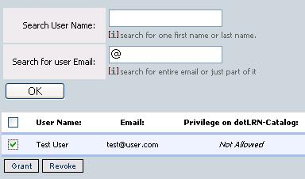
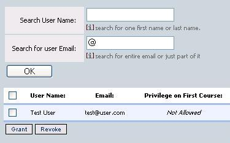
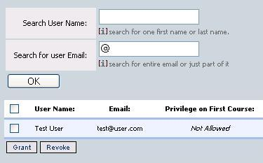

One user can have two privileges on dotlrn-catalog package one at package level (Admin, Create, None) and the other one at course level (Admin, None). The users that holds the "Create" privilege on dotlrn-catalog package can create courses, revisions, delete, associate on his own courses or the courses that he has recieved "admin" privilege. The user that creates once course has admin privilege on that course and can grant the same privilege over that course to other users. The users that does not hold any privilege at all, then can only see what courses are available and can try to enroll to them.
Grant/Revoke Permissions over dotlrn-catalog package
Only the users that have admin privilege on dotlrn-catalog package can will see the "Grant Permission link" and can grant Create privilege to other users on the system. Giving Create privilege to other users allows him to create, edit, delete courses in dotlrn-catalog package. You will be redirected to a page were all the users that have create privile over dotrln-catalo package will appear. And a search form to search for users to grant/revoke privileges.
Grant/Revoke Permissions over one course
You can grant your admin privilege on one course by making click on the Manage permission link on the permission column on your course list or by making click on the Manage Permission button on one course details page. Giving the admin privilege to a users allows he/she make all the things you can do with your course, you can also revoke his/her permission in the same way.
 
